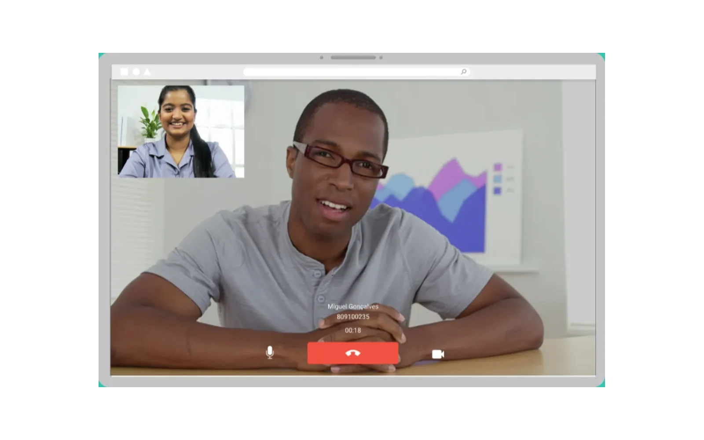
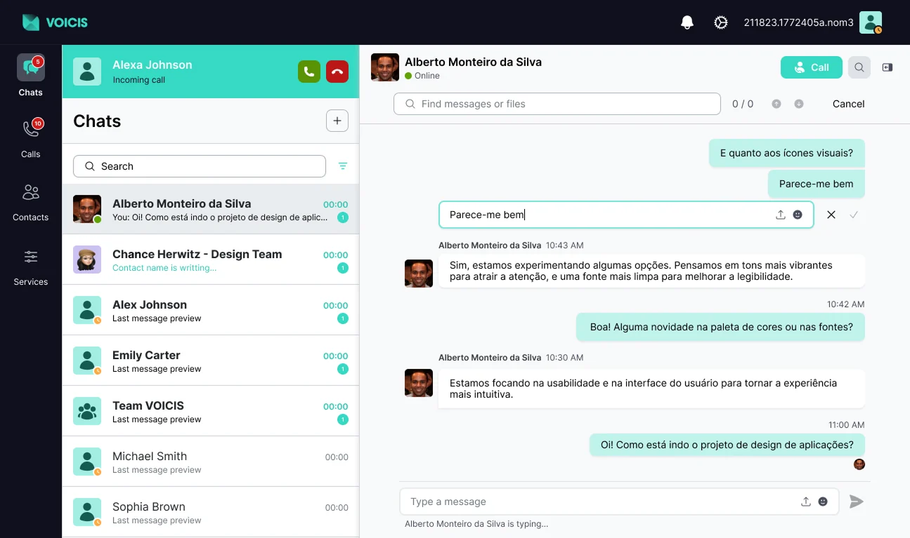
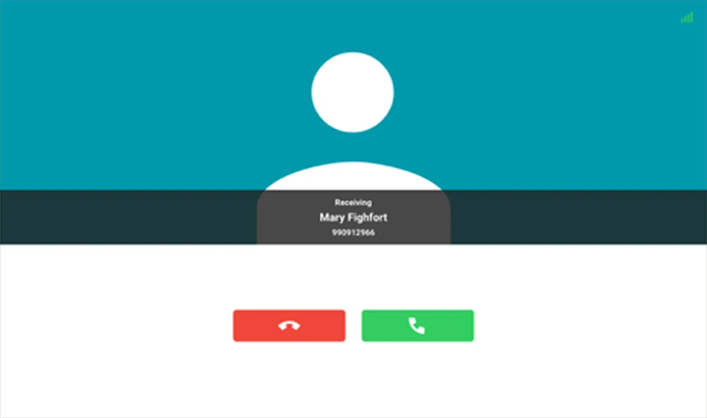
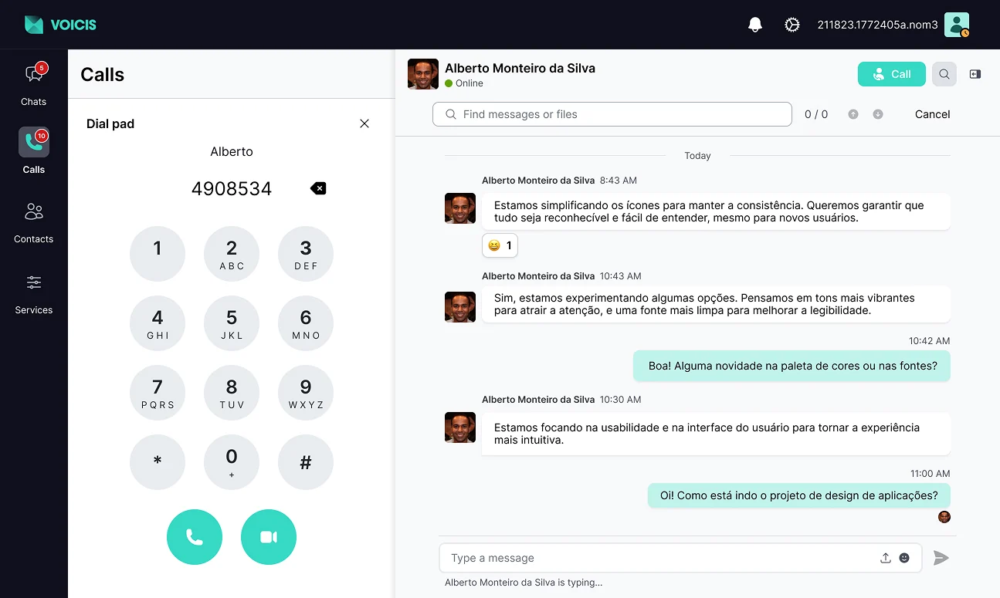
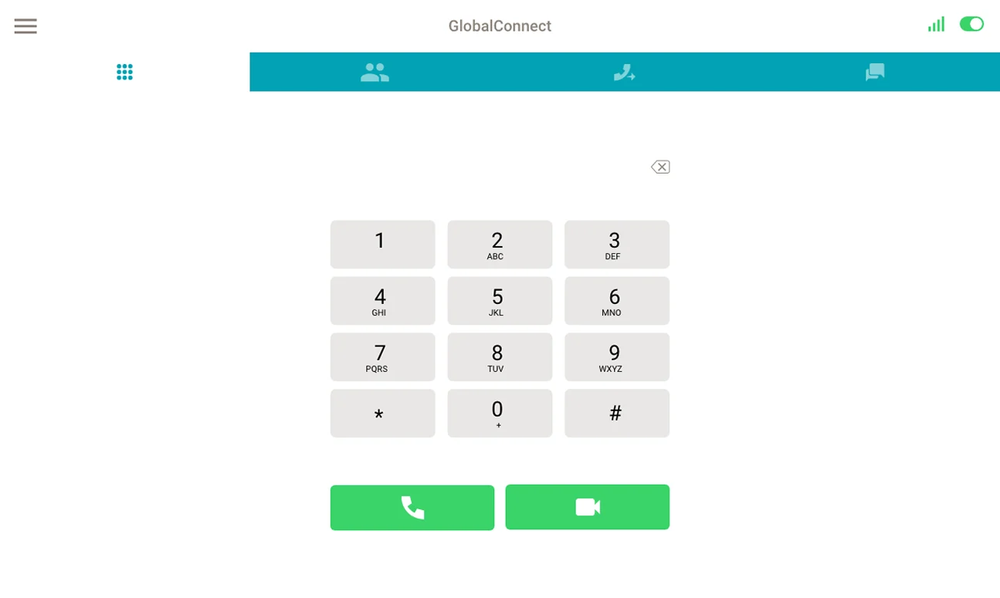

ITCENTER · Unified communications
VOICIS UC
The redesign of a call management platform: simpler flows, a modern interface and calls that no longer lock the user in.

The short version
An unintuitive structure, complex flows and visual inconsistencies made the platform hard to learn — and during a call it was impossible to use the rest of the system.
Competitive analysis, personas, information architecture and two wireframe approaches reviewed together with the team.
Calls that live alongside chat and other tasks, group conversations and a design system built from scratch.
Context and challenge
A few years ago, ITCENTER developed a unified call management platform to centralize several communication channels into a single system. The solution made it possible to manage calls, monitor flows and support the day-to-day work of technical and operational teams at other companies.
As the platform grew and user needs evolved, user experience limitations began to appear. The interface had an unintuitive structure, complex flows and visual inconsistencies that made the system hard to learn, especially for new users. On top of that, the product no longer fully met current expectations for usability, clarity of information and scalability.
In this context, a redesign of the platform became necessary, focused on improving the user experience, simplifying the main flows and modernizing the interface.
Challenge
- Simplify a technically complex platform without compromising critical features.
- Reorganize existing flows without disrupting ongoing operations.
- Create a scalable structure that supports future product evolution.
- Modernize the interface to current UX/UI standards without losing its identity.
Discover
Identifying the platform’s current problems
Beyond the outdated interface, the platform had functional limitations that directly affected users’ work:
- During a call, it was impossible to access the rest of the platform without hanging up.
- The chat did not allow sharing files or reacting to messages.
- Switching devices meant leaving the platform, logging out and logging in again.
Competitive analysis
The goal of this analysis was to understand how Slack, Skype and Microsoft Teams — chosen for their strong presence among communication and collaboration tools — distribute features and information across the interface, identifying effective patterns that could be adapted to our product.
Slack
A communication platform focused on chat and team collaboration, organized into channels and direct messages.
- Left column with all conversations
- Central area with the conversation detail
- Top bar with options (search, profile…)
Calls open in a new browser tab.
Microsoft Teams
An enterprise collaboration platform that brings together chat, calls and file sharing, designed for complex organizations.
- 2 columns on the left: main menu and 1st level of detail (which can be split in 2)
- Central area with the content detail
- Top bar with options (search, profile…)
The call appears on top of the second column, expanded or minimized.
Skype
A communication tool centered on messages and calls, focused on direct communication between users.
- Left column with tabs (chat, calls, contacts…) and a top area with options
- Central area with the conversation detail
The call takes up the full screen, but the left column can be brought back to keep navigating. The call history appears in the conversations.
Conclusions
- Every competitor uses left-hand navigation combined with a central content area.
- This structure supports several levels of detail and follows left-to-right reading.
- Additional navigation is done with tabs, modals and side panels, but it should stay consistent.
- Calls should stay inside the platform, supporting both multitasking mode and full focus mode on the call.
Define
Personas

Domingos
Director of the Technology Security Office
- Has several meetings a day
- Is always moving between offices
- Needs to know where the team’s work stands in order to make decisions
- Hates being bothered with minor issues (“time is money”)
- Being constantly interrupted in board meetings ruins his day
- Struggles to balance keeping up with the team and staying focused in meetings
- Make and receive calls wherever he is
- Set up services to filter calls according to his preferences
- Quickly meet with the right people on the team to gather feedback

Paula
Personal assistant to the CEO
- Wants to help her boss and be recognized for her dedication and efficiency
- Screens every call that reaches the CEO’s office
- Talks to lots of people every day and decides what to say, when to put a call through, hold, forward or call back later
- Wants her boss to be interrupted only when necessary
- Her boss gets angry when she puts through a call he didn’t want to take
- Gets frustrated when her boss spends hours on the phone and has no time to sign the papers sent by accounting
- Is used to doing her work a certain way — changes annoy her
- Hates it when someone touches her desk phone; checks the settings if someone has moved it
- Show useful information about the incoming call, to act quickly and correctly
- Advanced settings to filter calls by time, origin, etc.
- Unified communication channels to notify her boss even when he is on a call

Micael
Computer repair technician
- Responsible for repairs and diagnostics, alone or leading teams of 2–3 colleagues
- Is often the one who talks to clients, on site or when they call asking for quick technical support
- Has to keep office colleagues up to date on every job
- Gets frustrated when he isn’t given relevant information about a client — certain details make all the difference
- Spends many hours on the road; it’s hard to exchange feedback with the office and he has little time to make or return calls
- Avoids taking calls while driving, and gets frustrated when he pulls over on purpose for a call that turns out not to be important
- Show useful information about a client (in the contact history or when the call comes in)
- Service settings to filter calls while on the road
Conclusions
- Mobility → they need to answer and manage calls from anywhere.
- Flexibility → they want to reduce irrelevant interruptions and focus on what really matters.
- Immediate access to what matters most → contact history and relevant data to decide quickly.
- Speed → integrated communication improves coordination between teams and management.
Ideate
Information architecture
The new structure starts from what users do every day: chat, call and find people. After signing in, the main navigation is split into four areas: Conversations, Calls, Contacts and Settings.
- A single conversation detail. From the conversation list, the call history or the contact list, users always land on the same page. That is where they see the user or group, share files and start an audio or video call.
- Floating dial pad. It opens within Calls, without taking users away from the screen they are on, and starts the call directly.
- Settings in five groups. Profile and account, General, Notifications, Active sessions and About. Signing out leads back to the sign-in screen.
- Sign in (with Recover password)
- Conversations: Conversation list; New conversation (1-to-1 conversation, Group conversation)
- Calls: Call history; Floating dial pad, which leads to Audio / video call
- Contacts: Contact list
- Conversation detail, opened from the conversation, call and contact lists: User / group, Import files, Audio / video call
- Settings: Profile and account (Switch device, Sign out, which returns to Sign in); General (Language); Notifications (Conversations, Calls); Active sessions (End sessions); About (Product information)
Original map: view image

Design
Wireframes
In the wireframe phase, we explored two approaches and presented them to the team. Every screen and every menu was reviewed together, and the feedback gathered helped us reach a consensus on the best solution for the new version.

Final version
The final version presentation is on Canva: view the presentation (opens in a new tab).
Calls that no longer lock you in
With the new approach, users can stay on or receive calls while they keep using the team chat or any other ongoing task, in a smoother, more flexible experience with more autonomy.



More flexibility
All information and interaction with a contact brought together in a single conversation window — a less fragmented experience.


Group and real-time conversations
The platform now includes group conversations, creating a simple, organized space for teams to collaborate day to day.

Design system
This design system was not a mere aesthetic exercise but a strategic tool. By defining a consistent color palette, clear typographic hierarchy rules and a structured set of reusable components, we were able to:
- Ensure visual consistency across every interface and touchpoint.
- Reduce ambiguity in the design process.
- Make collaboration between design and development more efficient.
- Minimize rework and inconsistencies in implementation.


Learnings
Redesigning Voicis was much more than a technical challenge: it was the first time I felt like a true Product Designer. I learned that design is not just about gathering references from established platforms; ideas evolve through market analysis, alignment with stakeholders and direct collaboration with development teams.
On this project I had the freedom to explore several solutions to the same problem, which gave me the confidence I needed to defend and justify my design decisions.
I also stepped into the unknown by deciding to build a design system from scratch. I aimed to follow good organization practices and to use Figma variables strategically, ensuring a solid, consistent and scalable foundation for the product’s future.